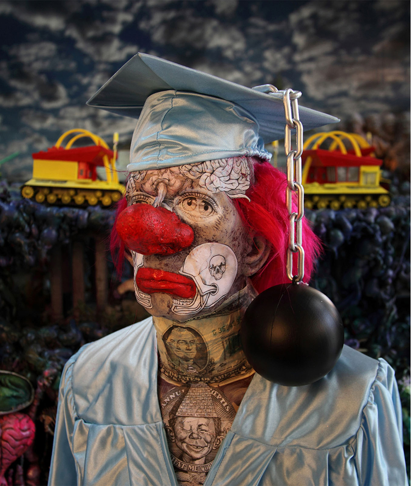

Exhibitions
Corey Helford Gallery (CHG Circa), Culver City, California, US, January 24–February 7, 2015.
Literature
Ron English, Fauxlosophy: The Art of Ron English (San Francisco: Last Gasp, 2008), p. 118. ISBN 978-0867196566.
Ron English, Original Grin: The Art of Ron English (Paris: Cernunnos, 2019), p. 110. ISBN 978-2374950938.
Notes
Also known as Clown School.
In Original Grin, this painting was mislabeled with the information for the work Combrat Class Portrait.
The work is documented on Corey Helford Gallery’s exhibition object page for Clown School, in FREAKS AND AMERICANA, accessed April 6, 2026.
